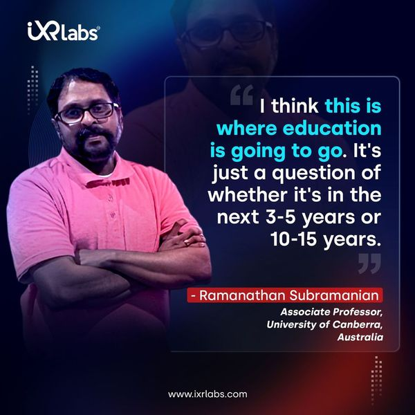

Technology is changing the way we understand and interact with our surroundings. Among the many innovations making waves, virtual reality (VR) is proving to be a game-changer in surveying and geomatics engineering. Virtual reality is not merely a gaming or entertainment platform; it is being reshaped - in the hands of professionals - into a means of gathering, analyzing, and interpreting spatial data.
This means VR is reshaping the way we work with all kinds of data because it can create an almost immersive experience for the viewer. From immersive training simulations to real-world mapping applications, VR is bridging the gap between theoretical learning and practical execution.
This shift is particularly crucial in higher education, where universities are striving to integrate modern technology into engineering curricula.
Let’s explore how VR is making an impact on geomatics engineering in VR and improving education in the field.
The Evolution of Surveying and Geomatics Engineering
Before discussing VR's role, it is important to understand how surveying and geomatics engineering have evolved. Traditionally, these disciplines depend on physical fieldwork using instruments like theodolites, total stations, and GPS receivers.
While these tools remain fundamental, nowadays modern engineering demands more automation and digital integration in the geomatics engineering field.
Advancements like LiDAR (Light Detection and Ranging), drones, and Geographic Information Systems (GIS) have already enhanced data collection. VR is taking things further. It allows engineers and students to interact with geospatial data in an immersive environment—something once unimaginable.
How VR is Enhancing Geomatics Engineering Education
One of the biggest challenges universities face is training students without exposing them to real-world hazards. Theodolite surveying often involves working in difficult terrains, construction sites, or large-scale urban environments. Virtual reality offers a safe and controlled way to teach geomatics in civil engineering.

Key Benefits of VR in Geomatics Education:
✅ Immersive Learning: Instead of studying 2D models, students can explore digital twins of real-world locations. This allows for a better understanding of structures and spatial relationships.
✅ Hands-on Training: Students can practice using virtual total stations and drones and also can learn how to operate them before stepping into the field.
✅ Error-Free Experimentation: Unlike real-world surveying, where mistakes can be costly, VR enables trial and error without consequences. This improves learning retention.
✅ Remote Accessibility: Universities can provide virtual field trips, allowing students from different locations to collaborate and explore survey and geomatics engineering projects without leaving the classroom.
For institutions looking to modernize their geomatics curriculum, integrating VR into coursework is a future-thinking approach that uplifts both theoretical and practical knowledge.
Applications of VR in Surveying and Geomatics Education
Beyond the classroom, VR is proving to be a powerful tool for professionals working in surveying and geomatics. Here are some ways it’s being used:
✔️ Virtual Site Reconnaissance
Before heading to a survey site, professionals can now explore the terrain in VR with the help of the Automatic Leveling Mechanism. This helps in planning data collection strategies, identifying potential challenges, and optimizing workflow efficiency.
✔️ Digital Twin Technology
Digital twins are virtual replicas of physical locations that are created using real-world survey data. Engineers and city planners use VR-based digital twins to simulate changes and optimize infrastructure projects before implementation.
✔️ VR for LiDAR Data Interpretation
LiDAR technology captures millions of data points to create highly detailed maps. With virtual reality, engineers can step inside these point clouds, making it easier to analyze features and also detect errors that might be overlooked on a 2D screen.
✔️ Enhanced Collaboration and Remote Surveying
Surveying teams no longer need to be physically present at a site. VR enables multiple professionals, whether they are in the US, Germany, or India; they all can review and discuss survey data in a shared virtual space. This speeds up decision-making and reduces travel costs.
Overcoming Challenges in VR Adoption for Geomatics
Even with its advantages, VR utilization in surveying and geomatics engineering does not come without its obstacles. Some challenges include:
✅ Hardware Costs: High-end VR headsets, motion tracking systems, and spatial computing devices require a significant investment. However, costs are gradually decreasing.
✅ Software Development: Universities need specialized virtual reality applications tailored for geomatics. While some platforms exist, many institutions still rely on traditional teaching methods due to limited software availability.
✅ Technical Training: Faculty members need proper training to integrate VR into the curriculum effectively. Without proper knowledge, the best technology can go underutilized.
✅ Data Processing Limitations: Large survey datasets require powerful computers for smooth VR visualization. Cloud-based solutions are helping to address this issue, but they are still evolving.
While these challenges exist, the benefits of VR in geomatics engineering far outweigh the drawbacks. With continued advancements in VR , now more universities and colleges will integrate VR into their workflow.
The Future of VR in Geomatics and Surveying
As VR technology continues to advance, its impact on survey and geomatics engineering will only grow. Future developments may include:
✅ AI-Powered VR Simulations: Artificial intelligence could enhance VR training by providing real-time feedback on a student’s surveying techniques.
✅ Haptic Feedback Devices: Gloves and suits with haptic feedback could make VR surveying even more realistic by simulating the sensation of handling real equipment.
✅ VR and Augmented Reality (AR) Integration: AR could allow surveyors to overlay virtual data onto real-world environments, making fieldwork more efficient and interactive.
✅ Cloud-Based VR Collaboration: Engineers across different locations will be able to work on the same project in real-time, reducing the need for travel and improving teamwork.
 Get the App from Meta Store: Download Now
Get the App from Meta Store: Download Now
With these possibilities on the horizon, VR in civil engineering is entering an exciting new phase where technology and spatial science merge like never before.
Final Thoughts: Why Universities Should Invest in VR for Geomatics Engineering
For universities looking to stay ahead in VR engineering education, then virtual reality is no longer optional but essential. It enhances learning, improves data interpretation, and prepares students for modern surveying challenges.
Institutions in the USA, Canada, Australia, Germany, and India are already experimenting with VR labs. Proving that this technology is not a passing trend but a fundamental shift in how surveying and geomatics engineering are taught.
By embracing VR, universities can offer students a hands-on and future-ready education that aligns with industry standards.
Whether it’s through virtual field trips or digital twin simulations, VR is transforming the field, and those who adapt early will secure the most benefits.